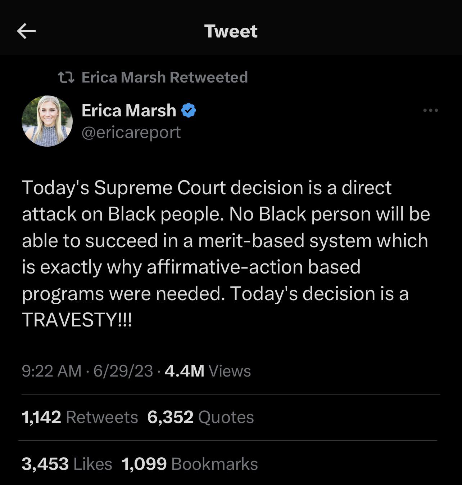
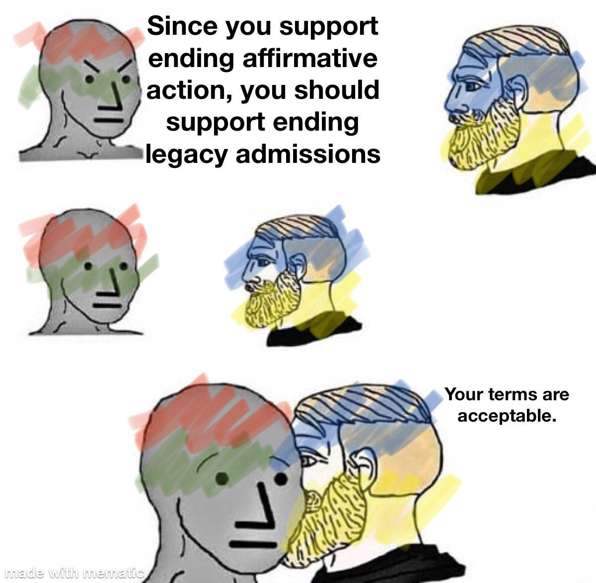
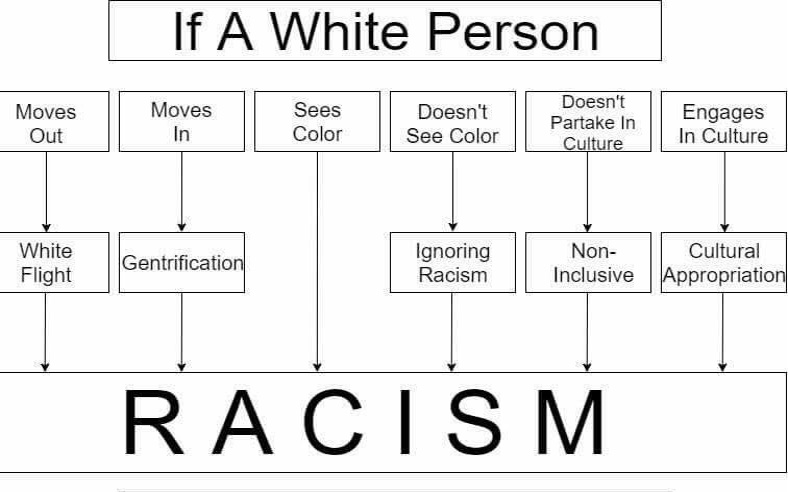
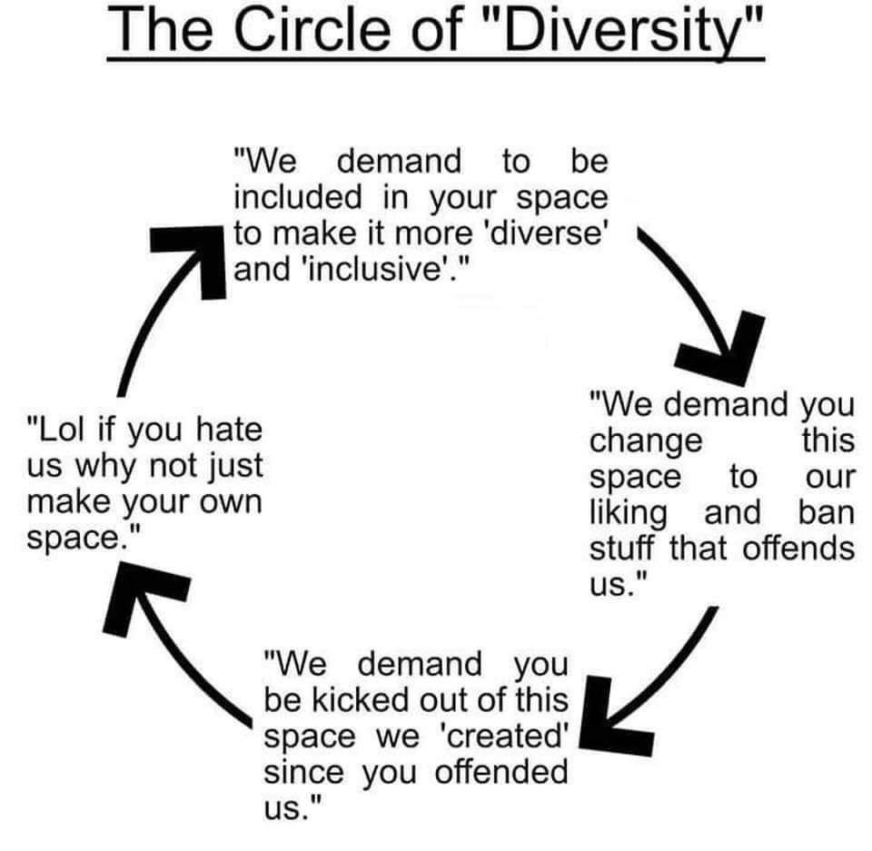
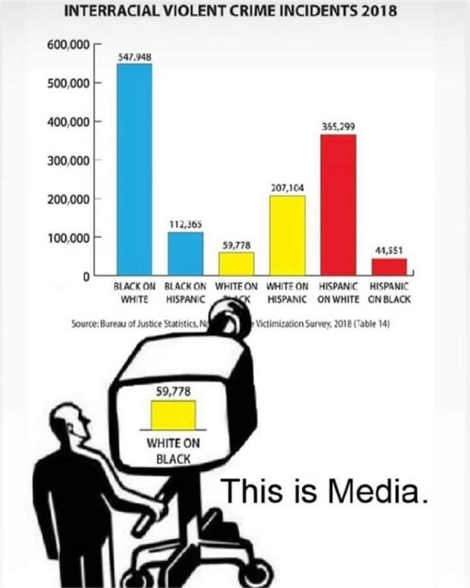
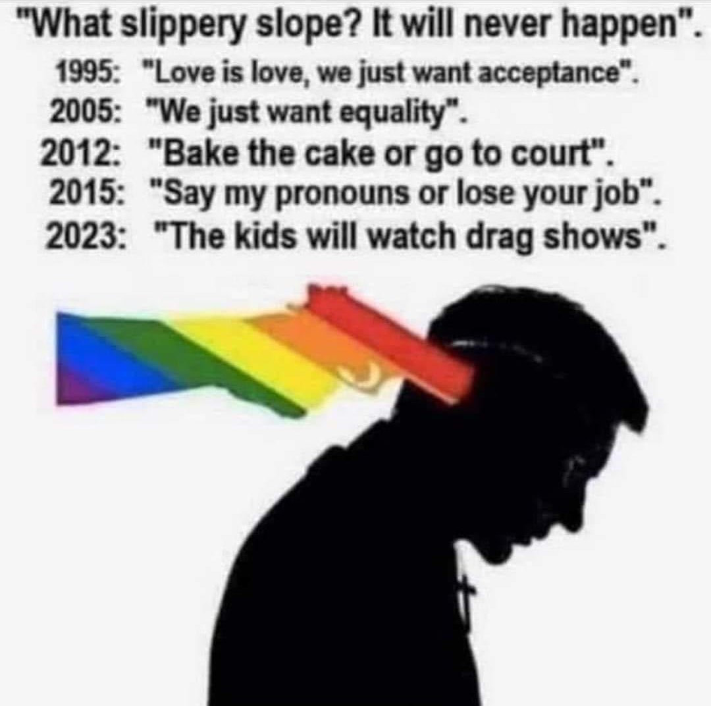

A Rational Analysis of “Social Justice”
The Origin & Problems with Wokism
1. The Nature of Discrimination and Diversity
Every single one of us has the right to discriminate, and we use it every day. We discriminate when we decide who we are friends with and who we are not friends with. We discriminate when we decide which employer we work for. We discriminate when we buy this brand over that brand, choose which gym we go to, which bank we deposit our money into, who we have sex with, whether we worship God instead of Allah (or no God at all), etc. Discrimination is never inherently “bad” because it is always done from a subjective point of view. The right to discriminate is fundamental to Life.
1.1. Valuing Diversity Implies Valuing Discrimination
Valuing diversity should imply valuing discrimination, otherwise what value is there to be gained from having diversity? If there is variation, but no selection, there will be no improvements in the ideas or output. Likewise, if there is no diversity, then there would be no value to discriminating. If there is no variation, then there is nothing to select from.
If the left-wing worldview is taken to its logical conclusion, it would actually lead to complete racial segregation. They don’t believe that there are any important differences between people of different races, but if that’s the case, then there can’t be any possible benefit to diversity because we’re all the same. And yet they celebrate diversity, even though they have no reason why it would make anybody’s life better.
At the same time, there are supposed disadvantages that are created by being a minority, so the logical conclusion should be that the best thing to do would be to segregate everybody by race, so that nobody faces the disadvantages of being a minority.
If other cultures and peoples are so insightful, then why don’t the leftists live in those countries? The vast majority of leftists wouldn’t live anywhere else but the West, except maybe Japan and other Westernized countries. If immigration boosts economic growth by increasing the population and thus increasing the size of the economy, then that’s an argument for first-worlders to migrate to third-world countries, not the other way around.
Related: If racism is so bad, why is diversity so good? - Aporia Magazine
1.2. Lookism Will Probably Never Go Away
Lookism will probably be the last form of discrimination to ever be eliminated. Not even the most hard-core leftists who claim to be obsessed with eliminating all forms of discrimination have recognized Lookism as a prevalent form of discrimination that exists basically everywhere.
In some cases, heightism can be classified as a subtype of lookism. Heightism is another form of discrimination that leftists don’t address, even though addressing it ought to be part of their worldview.
1.3. The Origin of the Need for Diversity Equal Representation
When leftists use the word “diversity”, sometimes what they’re really talking about is their desire for equal representation of population subgroups into positions of power and influence. In my opinion, equal representation is the only case where “diversity” makes any sense, provided that it’s practical, increases political stability, and it’s not reasonably unachievable due to genetic and biological differences. “Equal Representation” is a better term because it communicates its goal more explicitly and doesn’t have any hidden agendas, unlike “Diversity” which is now a euphemism for anti-white racism, and rightfully carries negative connotations.
The need for equal representation originates whenever there is a sizable portion of the population that is distinctly different from the rest of the population. In countries that are racially and/or linguistically diverse like India, the United States, Nigeria, the DRC, etc, there are great efforts to promote equal representation in government, STEM jobs and research, the corporate world, etc, because their populations are diverse. It’s not possible for a country with lots of racial, linguistic, religious, etc diversity to stay together for very long unless each of the diverse factions are treated equally and have fairly equal amounts of representation in major institutions. In some cases however, the drive for equal representation of all races has gone too far in Western countries to the point where it has lead to white people being nearly erased from advertising and much of the country’s mass media.
Since the United States had a sizable black population of about ~15% for over 200 years, black people in the United States felt excluded since the country still never had a black president until 2009.
If black people have always made up an average of about ~13% of the population of the US for the ~220 years for which the US has existed with a president as the head of government (starting with the enforcement of the US Constitution in 1789) up to the start of Obama’s presidency in 2009, then 220 * 0.13 = 28.60 years for which it would be proportionately “fair” for the US to have a black president, if we are working under the thesis that the goal of diversity equal representation is to represent every faction of the population equally.
The historical reasons why the United States never had a black president during the 19th and 20th centuries can be attributed to the social and legal inequality of blacks in comparison to whites.
Now that social and legal equality between blacks and whites has been achieved, genetic factors are the primary reason why the US is very unlikely to have proportionally as many black presidents as there are black people in the national population for the 21st century and beyond.
Hence, it’s not feasible nor reasonable for the US to have a proportionally “fair” percentage of black presidents in its future.
As another example, religion is a very polarizing topic in Nigeria where the population is split in nearly equal halves between Christianity and Islam. If the government and/or president of Nigeria was constantly represented by only one religion but not the other, this would disrupt the balance of power and national stability of the country. Thus, the Nigerian government must alternate between Christian-partisan and Islam-partisan leadership, lest the other side will feel excluded, perhaps even to the point where they will riot over it. Diversity between the two religions would be a less pressing issue if the country was split 95/5, 90/10, or even 80/20 on religion, one way or the other.
Theoretically at some point, some differences in a country’s population could become so small that the differences would basically become a non-issue, from the collective perspective of the entire population. In an ethnically homogenous country like Japan, Korea, Tunisia, etc, it wouldn’t make sense for the people in those countries to promote ethnic diversity in their leadership (government positions, corporation CEOs, representation in STEM, etc) because they are ethnically homogenous. An ethnically diverse government and corporate elite would not be representative of those countries. It probably depends on the context of the situation, but the insignificance of minority factions may have to be as small as 1/20, 1/50, 1/100, or perhaps even 1/1000 before the general population can safely ignore them without fearing any major consequences. Trans Activists who are in favor of stating pronouns believe that a population split of less than 1/100 is still big enough to warrant mandating everyone to state their pronouns, but I disagree on this for practical reasons. In the most general form, this question could be rephrased as:
“How big would the ratio have to be to make it reasonable for the majority of the population to do X to accommodate the minority of the population? 1/1000? 1/100? 1/10? 1/3?”
Since every human society has two biological sexes, there will always be at least one way to divide every human society into at least two separate and nearly equally-sized demographics. So even if a human society was ethnically homogenous, there could always persist a demand for the less represented sex to gain representation in a field of power and/or influence, provided that the society is reasonably egalitarian. As of 2024, the United States has never had a female president in the entirety of its 248 years of existence and 235 years for which it has had a president.1 Even then, it is difficult to imagine that the US will ever have enough female presidents leading over enough years to ever have a completely equal number of years over which it has had male presidents, because it simply isn’t biologically natural for women to be social leaders at the same rate as men are.
1.4. Regarding the Gender Gap in STEM Fields
If it were truly a “good” thing to have equal numbers of men and women in every field, then leftists would put the same amount of effort (scholarships, marketing, preaching, etc.) into getting more men into female-dominated fields, like education, medical field, linguistics, the humanities, etc. When questioned about this, leftists will tend to say that it’s also important that more men enter the humanities too. However, we have to judge people by their actions instead of their words to figure out what they truly want. Leftists don’t even try to recruit more men into female-dominated fields. They only want more women to study STEM because STEM fields have greater social power. They are where humanity’s technology and innovation take place.
People don’t choose what they want to study based on gender or ethnicity. That whole notion is absolutely ridiculous. Everybody studies what they are interested in or what will benefit them. Even though 60% of college students are women and the ratio of women-only to men-only scholarships at US colleges is also 11 to 1, there are still less women in STEM fields than men (biology and medical fields are exceptions). The gender gap in other STEM fields may be decreasing, but it’s unlikely that it’ll ever decrease enough to be completely equal for both sexes. This implies that the gender gap in STEM participation is primarily due to natural, biological differences between men and women. Men and women simply have different interests, and that is okay.
Even if women were subsidized with scholarships and preferential treatment to encourage an equal participation of women in STEM fields, men would still continue to be the leaders in STEM. If there are two groups that work in STEM and one of them chooses it without financial incentives because they would enjoy more than anything else that they could do, and the other group works in it in part because of the financial benefits, then the group that does STEM without those benefits is going to have the better scientists, the better engineers, and the better mathematicians since they’re more motivated to do the field to begin with without the additional financial incentives. The unsubsidized people that are willing to work in STEM work without any additional incentives (men) will still be the better workers in the long run since they are more motivated by the field itself instead of its economic benefits.
If women can do everything that men can, how come they’ve never successful oppressed an entire gender? – Toler Wolfe
2. Wokism
Main Article: What is Wokism? - Blithering Genius
Nature is inherently inequitable. Wokism is a social constructivist theory that is more “optimistic” as opposed to more “pessimistic” biological realism. The social constructivist view goes like this:
- We are separate from other animals (and nature) due to the development of culture.
- Culture is the primary factor for conditioning our behavior (blank-slatism).
- The current culture results in inequality.
- We have to eliminate inequalities.
- We can greatly reduce division, hatred, and inequality from society if we change the culture.
- Thus, we need to change the culture.
The main fallacy in this line of reasoning that is that inequality results from Nature, not culture. It also assumes that we have obligations to make everybody equal and to relieve everyone’s suffering. Wokists are optimistic because they think that it will be easy to change the culture, but they’re unaware that culture depends on the genetic traits and evolutionary psychology of a population.

2.1. What Caused The Rise of Wokism?
There are various theories about the rise of wokism that can be summarized as follows. The first three theories were written by Nathan Cofnas in an image one of his blog posts:
- Christopher Rufo: Critical Theory -> “long march through the institutions” -> Wokism
- Richard Hanania: Civil rights law demands nondiscrimination -> judges and bureaucrats declare disparate impact to be evidence of discrimination -> legal bureaucracy to enforce civil rights laws -> Wokism
- Nathan Cofnas: WEIRD morality & belief in psychological equality & intractable group disparities -> elites become woke ->
- -> woke philosophy -> children indoctrinated with woke ideology -> Wokism
- -> woke law -> law reinforces institutionalized wokism -> Wokism
- Edward Dutton, et al: New technology -> increased survival rates, people have children at later ages -> mutations accumulate in human genome at unprecedented rates -> high mutational load -> Wokism. This is called the Mutational Load / Spiteful Mutant Hypothesis.
- Ted Kaczynski: New technology -> life becomes easier -> people no longer have to focus on their survival or work as much -> people need surrogate activities to fulfill meaning in their lives -> people engage in activism to fulfill power process -> oversocialization feedback loop occurs -> Wokism. This could be called the Power Process, Surrogate Activity, and/or Oversocialization Theory.
I believe that it’s likely that Mutational Load is partially responsible for causing a minority of woke people to be woke. However, I strongly disagree with the Mutational Load Hypothesis that genetics was the main factor that caused so many people to go woke, because it simply doesn’t fit the evidence. The rise of wokism occurred within just a few decades or so among such a large number of people, so our heuristics regarding differences between people inform us that wokism is probably mostly environmental, rather than genetic. And as we will see, there were multiple environmental causes and feedback loops that amplified each other’s influence, so an environmental hypothesis better fits the evidence.
Rufo’s, Hanania’s, and Cofnas’s theories of wokism each note a few important points, but they each ultimately fail to fully recognize the historical context and background regarding why critical theory, WEIRD morality, and wokism evolved in the first place (the causes of 1960s counterculture, anti-Nazism, etc). None of the theories describe the memetic processes that propagate wokism either.
The theory that Ted Kaczynski proposed in Industrial Society And Its Future is the oldest of these explanations, but I’d say that it’s the best one. He missed some important details (anti-Nazism backlash, higher birth control access, etc), and his description could be improved, but he did a great job at describing wokism and why it occurs, especially when terms like “woke” and “virtue-signaling” didn’t exist yet when he wrote his manifesto. He doesn’t describe his theory on the origins of wokism concisely in the manifesto since he wanted to spend a lot of words describing and criticizing leftism/wokism and since that wasn’t the main goal of the manifesto. Nevertheless, sections 2-6 explain most of his theory, with section 5 “The Power Process” and section 6 “Surrogate Activities” being the most important.
2.2. My Theory For Why Wokism Became Popular
The following is an outline of events throughout the 20th and 21st centuries that lead to the rise of Wokism:
- Christianity was initially the dominant moral belief system of the West for a couple millennia.
- Humanism/Wokism and Christianity are different ideologies, but Humanism inherited its moral, mythical, and conceptual (sub)structure of Christianity, but without God.
- This explains why altruism was historically a core value in the West, even though it conflicted with the imperialist, nationalist, Social Darwinist ambitions of the West during the late 19th and early 20th centuries.
- The Frankfurt School originated in Germany during the 1930s Weimar Republic, which later laid the foundations for Critical Theory and Postmodernism. The Frankfurt School is mainly notable for being the first historical roots of wokism in academia, but it probably wasn’t very important for shaping wokism compared to the other points on this list.
- The conclusions of WWI and WWII caused the popularity of Nationalist ideologies in Europe to decline. The decolonization of the entire world following WWII and the shift to focusing on the Cold War between Capitalism and Communism further weakened nationalist attitudes and ideologies in Europe.
- The Allies defeated the Axis Powers in WWII, which lead to the downfall of Social Darwinist beliefs and ideas (e.g. eugenics), due to their association with Nazism. A sharp cultural backlash of anti-Nazi values and ideology gradually flourished throughout the West since nobody wants to be accused of being a Nazi. The Holocaust becomes a sacred moral narrative.
- The aftermath of WWII and the baby boom generation caused the greatest cultural turning point of the 20th century, the 1960s Counterculture Movement, which ignited the rise of Wokism and Humanism.
- The increasing availability of the birth control pill and other types of contraception in the 1960s and beyond lead to the Sexual Revolution, which lead the rise of Feminism.
- The fall of Christianity caused more people to lose their sense of purpose in life. Fewer people were propagating Christian memes, so this created a vacuum that caused people to spread and exchange other memes instead, to fill the loss of purpose in their lives.
Humanism replaced God with Humanity, and (to a lesser extent) nature, as the focus of worship.
- Humanism transferred divinity from God to Humanity.
- The omniscience of God was transferred to Humanity as faith in reason and science.
- The omnipotence of God was transferred to Humanity as faith in technology and progress.
- The benevolence and moral authority of God was transferred to Humanity as faith in human empathy, compassion, and altruism.
– Blithering Genius, Soulism
- Homosexuality thus became less taboo, the Western left became more accepting of Muslims, etc.
- Humanism arose in the late 20th century, as a secular replacement to Christianity.
- Humanism was influenced by the need for equal representation, which became apparent for the first time in Western culture after the passage of the Civil Rights Act of 1964.
- The prosperity of the West, technological advancements, and the success of the Civil Rights Movement and other counter-culture movements created the illusion of “moral progress”. This created the folk theory for woke morality.
- The fall of the USSR ended the Cold War and shifted the public’s attention towards other political issues. It becomes more socially acceptable to promote socialist and communist ideas in the West.
- Advancements in household technologies throughout the 20th century, especially during the Roaring 20s and the baby boom generation, made it easier for women to do housework in less time, which partially filled a void in the power process.
- People became more and more alienated from the modern world, due to the rise of fake information and alienation created by mass media and technology. Much of this fake information and the morals instilled through the mass media caused/cause people to adopt and favor more humanist values.
- Technological advancements caused people to be unable to experience the power process, so people started engaging in woke activism, as a surrogate activity for creating meaning in their lives.
- There may be some truth that the rising mutational load among humans has caused some people to have genetics that predispose them towards wokism. But this would be a much more minor factor. A related factor could be that Western society has been getting less intelligent and more dysgenic since the mid-1800s.
- The existence of racial, sexual, wealth, etc disparities justifies and strengthens woke activism and support for demographic quotas, with the goal of eliminating said disparities.
- Virtue-signaling and woke advocacy becomes a way for various factions to maximize their entitlements and minimize their obligations to the rest of society. Whether wokists realize it or not, most virtue-signaling is motivated by psychological selfishness and power hunger to some extent.
- Gay marriage is a great example. Gay marriage wasn’t really about gays wanting to marry, for the most part. The vast majority of gay people aren’t married, even after it was legalized. Gay marriage was more about conquering the sacred institution of marriage, in favor of Wokism.
- The most important thing about gay marriage was that everyone must agree that gays are equivalent to heterosexuals. Everyone must submit to the wokist value system, or they’re evil.
- The same applies for feminism, transgender rights, poor people and welfare, etc.
- Letting people do whatever they want as long as it doesn’t harm others became a cultural adaptation for making society function more smoothly with fewer interpersonal conflicts.
- This partially explains why soulism became more popular than worldism.
- Morality and politeness are also examples of cultural adaptations, which are not selected to benefit a single individual. Similarly to language, they all emerge in a social context.
- Climate change becomes politicized and moralized for various reasons. Overpopulation concerns lost their popularity after the 1960s and 70s, which contributed to people fearing climate change more.
- Wokism gradually penetrates Hollywood, entertainment media, news media, and academic institutions.
- Political and financial institutions later become compromised as well, since it’s socially advantageous to virtue-signal for higher social status, better approval, etc, even if it leads to pathological altruism for the rest of society.
- The establishment media became more partisan in the 2000s, and started using fake news tactics to propagate of wokism, and reinforce the beliefs of its believers.
- The Internet created lots of social groups to which people could conform to, which exacerbated the rise of wokism and increased radicalization. It also caused many different flavors of wokism to develop.
- Various memetic phenomena contribute to the further spread and development of wokism.
In summary, the rise of Wokism was caused by multiple factors, namely technological advancements and lifestyle changes, increased contraception availability, the fall of Christianity, the rise of Humanist values, the defeat of the Axis Powers in World War II, anti-Nazi backlash, a struggle by wokists to find meaning in their lives, various memetic phenomena, and the capture of major establishment institutions.
2.3. Why Promoting Hereditarianism Won’t End Wokism
Cofnas proposes that educating people about hereditarianism will be sufficient to defeat wokism, but it won’t be enough.
- His proposed plan implicitly overestimates the ability of people to change their minds.
- The wokists don’t have any effective long-term solutions for bestowing meaning to their lives.
- Wokism and virtue-signaling will continue to exist no matter how many milestones the wokists manage to achieve. Nature is inherently inequitable, so wokists will never run out of new equalist milestones to propose. And every time they do manage to achieve some equalist milestone, other ones will just matter more.
- Many people promote wokism because it personally benefits them.
- Even if wealth disparities are mostly genetic, that won’t stop poor people from supporting welfare.
- Demographic minorities support demographic quotas because the quotas benefit them.
- Feminists promote feminism because it benefits them.
- Trans people won’t give up on trans rights or trans advocacy.
- Et Cetera.
- Wokism that focuses on racial disparities isn’t the only type of Wokism. Some wokists prefer to focus instead on sexual disparities, LGBT groups, climate change, environmentalism, disability rights, etc. If promoting Hereditarianism discourages wokists from focusing on racial disparities, they might redirect their attention to focusing on other woke causes. Instead, it would be better to promote a general public knowledge of Biological Realism, rather than just Hereditarianism.
- Cofnas theorizes that if people understand that racial disparities are genetic, then they’ll stop being woke. However, I’m not convinced. Even though everybody knows that disabled people are disadvantaged by definition, woke activism for increased rights among disabled people has only gotten more popular over the past few decades or so, not less. This suggests that even if racial disparities are widely recognized as mostly genetic, some people won’t stop advocating for eliminating the disparities anyway.
2.4. Ending Wokism
Until the issues that are unrelated to public ignorance are mostly resolved, the wokists will continue promoting woke causes to fill the void of meaning in their lives. I propose the following solutions and ideas for ending wokism:
- Educating people about Epistemology and Biological Realism: If people learn to understand why the woke causes that they’re fighting for are futile, then they may re-evaluate their beliefs and actions.
- Informing people how underperforming minorities would benefit from accepting biological realism.
- Tactics for fighting the Culture War and moving the Overton Window: We need to have good arguments and present ourselves as reasonable, intelligent people acting in good faith. These will create cognitive dissonance.
- Rational Humanism: Most humans need to have a belief system or religion to follow and give purpose in their lives. To replace, we need such a religion that has more natural, sustainable, long-term causes. Rational Humanism proposes that people should focus on reproduction and civilization as the main chosen purposes of their lives.
- Fixing Academia to be more truth-oriented, rather than status and advocacy oriented will weaken the Establishment and many of the theoretical justifications for wokism.
- Promoting white identity and making arguments against the supposed invalidity of white pride and identity will be necessary for exposing the irrationality of anti-white ideology.
- As time passes and as modern civilization declines, it will become more and more clear that Humanists and Humanist beliefs have failed to achieve the world that they’d like to achieve. If enough frustration, disappointment, and apathy develop, they may be more willing to change their minds and reconsider their worldviews.
- Evolution will gradually cause leftists and leftist genes to become less common.
2.5. Why would underperforming demographics benefit from accepting biological realism?
Quote from But knowledge about racial differences could be used to justify racism - Race FAQs:
To be ignorant of racial differences is equivalent to denying racial differences, which is equivalent to denying reality. We can ignore reality, but we cannot ignore the consequences of ignoring reality. Even if we wanted to ignore racial differences, we could never completely ignore them in practice. The biological reality of race is still evident when people need organ transplants, when some people are at risk of disease but not others, why racial disparities continue to exist despite social intervention, who tends to wins Olympic sports, and much more.
Furthermore, knowledge highlighting racial and genetic diversity doesn’t always have to be negative, nor should it be. If different races (and different people) tend to have different strengths and weaknesses, then it makes sense for a rational society to figure out how to leverage every person’s strengths, while brainstorming how to mitigate or cover every person’s weaknesses. This cannot be done if we ignore racial and genetic differences. Diversity and specialization should go hand in hand.
- Meritocracy ultimately benefits a far greater number of people. The only people who wouldn’t benefit from meritocracy are those who would gain power by preventing meritocracy.
- Eliminating racial disparities won’t eliminate disparities in general. Eliminating one type of inequality will only make other types of inequalities matter more. Nevertheless, a true meritocracy should eliminate disparities that are caused by environmental factors, in order to function properly.
- If people from underperforming demographics are chosen in a system with no demographic quotas, then they won’t have to worry about if they were merely diversity hires. They will know that they were chosen because they were the best person society had to offer for filling the position at that time.
- Societal improvements that help everybody will help underperforming demographics as well. This website proposes many ideas for improving society as a whole. For example, we theorize that Georgism would boost economic prosperity, which would collectively benefit everybody, regardless of how disadvantaged a person may be. Even if some amount of inequality between people is inevitable, it may not matter if everybody is able to achieve and afford a decent standard of living.
- See: Why Does It Matter That People Accept That Race Is Biological? - Race FAQs.
- By understanding the true causes of racial disparities, we can figure out how to address them and eliminate them more efficiently. Finding the truth is instrumental to achieving values.
- If some races have stereotypes that negatively affect how other people perceive them, then we need to ask why those negative stereotypes persist:
- If a minority of Black people are criminals or have been criminals, then that minority of people is creating a bad perception of the entire demographic as a whole. The actions associated with the criminal minority are partially holding the majority back. So, if we can imprison or eliminate that criminal minority, then the rest of the people in that demographic will benefit from a naturally more positive public perception and stereotype.
- It only takes a few people from a demographic to create a negative stereotype that ruins the public perception of the demographic as a whole. Just a few people ruin things for everyone else.
- More succinctly, if we want to improve the public perception of some demographics, then we need to eliminate the people who are creating negative perceptions of the demographic, and thus ruining the public perception of the demographic as a whole.
- As the collective performance of their demographics improve, the negative perception of those demographics having higher crime and lower intelligence will disappear, which will benefit people from those demographics more and more as they get better and better.
- Increasing policing and locking up criminals in neighborhoods that have high crime rates would reduce the amount of crime in those neighborhoods. This would benefit all the people living within those neighborhoods, and make them safer places to live, which could help eliminate the main environmental factors that are holding back the demographics who live in those neighborhoods.
- Reproduction licenses would make it harder to have children, which would make having and raising children higher status. This would probably reduce the population of single parent households and fatherless black children. Currently, many black men choose to seek status by being violent thugs and getting reproductive free rides.
- If we can acquire the necessary political will for enforcing reproduction licenses, it would help reduce or eliminate racial disparities over time. Eugenics would help select for better people from those races, which would put people from those races on more equal footing with everybody else.
- Increasing gene flow with other races could help reduce the disparity gaps between high-performing and underperforming groups.
- It’s likely that the human race will probably mix into some sort of global race in the distant future, as race mix continues, if modern civilization manages to persist.
- If underperforming groups increase their performance, that will encourage more race-mixing, which will increase gene flow, which will cause some positive feedback loops for making those groups on a more equal level with the higher performing groups.
- Fortunately, all of these proposed ideas have positive feedback loops with each other.
- Underperforming races would benefit enormously from race realism. They would stop going through life convinced they were cheated. They would lose much of their resentment of whites. They would learn the invaluable lesson that success or failure depends overwhelmingly on their own talents, not what whites think of them.
- Black/white relations – and no one claims they are good – would benefit enormously from race realism. If many blacks did not obviously resent whites, race relations would be much less fraught with tension. If whites didn’t have to worry constantly about “privilege” and “microaggressions” and “unconscious bias”, they would have less reason to avoid blacks and better relations with the ones they know.
- Finally, if society were honest about race, the forces that created Dylann Roof, Patrick Crusius, and Payton Gendron would be much weaker. Is it surprising that some young whites get angry when they are taught that they are oppressors, have no history to be proud of, and that their eventual replacement by non-whites will be a triumph of diversity? Violent, sickening acts are even more likely when dissident views are suppressed and called “hate” or “white supremacy”.
- People who have a voice speak; people who are silenced express themselves in other ways. Brenton Tarrant is an Australian who shot up two mosques in Christchurch, New Zealand. He was opposed to mass, non-white immigration, which he thought threatened the white majority. I feel certain that if there had been a full, public debate on the pros and cons of Muslim immigration, and on the pros and cons of reducing the white percentage of the population through immigration, he would not have killed anyone. – Jared Taylor, America Must Have Race Realism
Why should we care that underperforming demographics are able to perform well?
In order to end wokism, it is important that underperforming demographics understand how accepting biological realism could benefit them. One of the biggest reasons why such demographics support wokism is because they believe that they will benefit from woke policies. If people don’t understand how the world would benefit from accepting biological realism, then they are unlikely to support it. They need to understand that it is disadvantageous to let wokism continue.
2.6. Rational Activism vs Virtue-Signaling
How do you separate virtue-signaling from genuine, rational activism?
Sometimes that can be difficult, but these are some good general guidelines:
- If a person is misidentifying the causes of the problem(s) that they are concerned about, then that indicates that they never bothered to think enough about what the problem actually is. If one doesn’t understand the problem, then they don’t have any solutions. If they don’t have any solutions, then they’re only virtue-signaling. Real activism has to be rational, informed, and have effective solutions.
- If a person is proposing ineffective solutions that won’t solve the problem(s) (e.g. ineffective solutions to climate change), then they’re not an activist, or at least not an effective one. It’s rational to label people as idiots and virtue-signalers, if they propose ineffective solutions that won’t work.
If a person is exaggerating the problem, then they’re a virtue-signaler, not an activist. Wokists tend to exaggerate the problems of many other social issues as well.
A true activist would be concerned with understanding and promoting the truth.
- If a person criticizes the actions of others, while not improving their own actions, then they are a hypocrite and a virtue-signaler. For example, a person may criticize the environmental footprints of other people, while doing nothing to reduce their own footprint (consumption of resources and pollution). Genuine activism should not be hypocritical.
- If a person is virtue-signaling or fearmongering because they have a conflict of interest (e.g. a conflict of interest regarding climate change) (and hence personally benefit from people worrying about such issues), then they’re not a true activist, especially if their actions benefit from remedying problems, rather than actually solving them. It’s more likely that they’re just yet another selfish person who is seeking to promote their interests, even if that entails misleading people.
3. Why the Supposed Racial Oppression of Minorities in the United States is a Myth
- “Oppressed” racial minorities aren’t leaving the United States. If anything, they’re immigrating to the United States.
- Historically, American Indians, Native Hawaiians, and others fought lots of wars with each other. So why was it any different when white Europeans arrived to the New World and did the same thing?
- The best explanation for different crime rates between different races is that they’re caused by their different genetics, since that’s what the definition of a race is and since this is the conclusion of Occam’s Razor. The homicide rates of blacks and Hispanics in the United States match those of sub-Saharan Africa and Latin America respectively. It makes perfect sense that races whose populations have been historically and predominantly limited by tribal warfare (e.g. sub-Saharan Africans and American Indians) evolved to be more violent and have naturally higher crime rates than racial populations that were primarily limited by diseases and famines instead (e.g. Europeans and East Asians).
- Ghettos are probably mostly caused by genetics.
- The Asian minority in the US used to be very oppressed, but now it’s among the most successful and well-off for its size. If Asians can rise from the bottom to the top, this is evidence that nothing was really preventing other minorities from doing the same, besides genetic tendencies and variations of course.
- The average black or Hispanic person in the US lives a far better life than someone of the same ethnic group who lives in a different country.
- Police brutality is not unique to black people, and neither is race-on-race violence. However, we do see that white people are attacked by other races more often than that they attack other races.
- Since the Civil Rights Act of 1964, black people have had 50+ years of time to recover socially and economically, plus a variety of ethnomarxist policies and propaganda, and yet they still don’t have the same prosperity as whites. At some point, a rational-minded person will have to ask: Is this really an issue that can be fixed by “improving” (supposed) environmental circumstances? Or will blacks never achieve the same prosperity as whites without intervention since race is real?
- ~67% of blacks in the US are raised by single parents. Obviously, this has a huge impact on how most blacks live their adult lives. But how could racism be feasibly attributed to causing most blacks to be raised by single parents, and thus experiencing poorer life outcomes as a result of that? A better explanation is that black people are more likely to be raised by single parents due to genetic factors.
- The population of Africa skyrocketed after the Europeans colonized the continent, which implies that European colonization was largely a good thing since it largely ended war, disease, and famine in Africa for the time being.
- Racial disparities in wealth, academic achievement, educational attainment, crime rates, etc are better explained by innate biological differences that are associated with race.
{kind=link}
3.1. Thoughts On Affirmative Action Demographic Quotas And Discrimination
The best way to stop racial discrimination is to stop discriminating by race.
Unfortunately, when people get used to preferential discriminatory treatment, equal treatment will seem like discrimination, even though it’s the other way around.
“Affirmative action” is a misleading term, nor is it descriptive of what it actually is. If someone didn’t know what “affirmative action” is, it’s not clear what the “actions” are, nor would it be clear what’s supposed to be affirmed. Sometimes “affirmative action” is about achieving equal representation. But these days and especially in Western countries, “affirmative action” is actually about discriminating against the majority demographic in favor of less qualified minority demographics, by the use of demographic quotas. So when talking about “affirmative action” in general, I shall use the term “racial quotas” and “demographic quotas” henceforth. Likewise, people who are in favor of “Racial Quotas” and “Demographic Quotas” shall be called “Ethnomarxists” and “Demographic Marxists”. These terms are more self-descriptive and intuitive. They also better highlight what “affirmative action” actually is and what it’s about.
However, we should note that these “quotas” may be biases, and are not necessarily strict quotas (i.e. wokists may not be aiming for strict proportions or percentages). More moderate wokists would prefer quotas that are proportioned to the demographic makeup of the population. Whereas more radical wokists want prestigious positions to be filled by underrepresented groups as much as possible (e.g. Ruth Bader Ginsburg, the Biden administration, etc).
We could more simply just use the words discrimination, racism, sexism, etc to refer to “affirmative action”. But if I call it “discrimination”, “racism”, etc instead, people aren’t always going to know if I’m talking about “affirmative action” specifically or discrimination in general. Hence why I like the term “demographic quota”, even if I have to explain that it’s not necessarily a strict quota.
See: Wikipedia: Asian Quota, Wikipedia: Jewish Quota
Demographic quotas reward less qualified people at the expense of people with better merits. The end result is that prestigious white-collar jobs are occupied by less qualified people. Eliminating demographic quotas would thus ensure that applicants to universities, scholarship recipients, and other opportunities are all based purely on merit. This is the better approach because it would lead to our society to have better engineers, better programmers, better lawyers, better doctors, etc, which would lead to better machinery, better software, a better legal system, and better healthcare. The merit-based approach thus benefits everyone across the board, whereas the same cannot be said for the demographic quotas approach. Additionally, if a person of color does become a doctor, engineer, lawyer, etc in the future, they won’t have to wonder if they were the best the school had to offer, or the “best adjusted for race”. The rest of society won’t have to wonder or suspect that either when they are the patient, the consumer, or the defendant.
|  |  |
This tweet basically says that black people have no merits and they need a rigged system to get jobs. (Apparently, it wasn’t authentically written by a real person, but the point still stands.) Racial quotas sound so stupid and absurdly racist when the quiet part is spoken out loud. Ethnomarxists believe that the only way blacks and Hispanics can achieve a Harvard education is if they are given preferential treatment and access.
Another problem with demographic quotas is that you can define an almost unlimited number of intersectional categories. Even if demographic quotas do succeed in selecting applicants with equal quotas for race and sex, wokists may eventually ask “Why stop there?” Applicants should also be selected equally based on childhood upbringing, disabilities, hardships, life circumstances, etc. Going further, leftists may eventually demand that everyone should also receive equal income, equal benefits, equal dating opportunities, etc, in addition to existing race/sex/disability/hardship quotas. If you make one type of inequality go away, then other types of inequality will simply matter more. The same argument can also be made as to why pursuing maximal wealth equality is equally pointless.
To summarize, pursuing demographic quotas and other types of absolute equality has at least two problems: 1. it erodes meritocracy, and 2. it only makes other types of inequality matter more.
3.2. Anti-White Ideology And Propaganda In The West
The only way anyone could overlook the current anti-white propaganda and policies in the West is if they have an ideology that blinds them to it. When “It’s okay to be white” is labeled a hate slogan, we have a problem.
Links Regarding Anti-White Ideology And Propaganda In The West:
- Systemic Anti-White Bias in Western Media: A Ton of Evidence (Available as PDF)
- The Rise of Anti-White Bias in Media (with Statistical evidence)
- The Intentional Destruction of White Birth Rates: Leaked reports from Planned Parenthood, the Rockefeller Foundation, World Bank, US NSC (including CIA, military etc.)
- Imperialism and Colonialism: White Guilt and Historic Non-White Conquests of European Territories
- Stochastic Terrorism: Non-White academics promote violence against Whites with real-world consequences
- Anti-White Wikipedia
- The “Right” Amount of Concern about Racism - Noah Carl, Aporia Magazine: This article presents eight examples of how the West’s concern with anti-racism has gone too far, to the point of being counter-productive: cancel culture, self-censorship, the media’s Great Awokening, responses to police shootings, hiding the race of suspects, hugging people during a pandemic, not profiling terrorists, and ignoring grooming gangs.
4. Memes and Graphs relating to “Social Justice”
|  |  |
|  |
|  |  |
Black History: Africa Largely Benefitted From European Colonization More Than It Suffered.


The borders of Africa are blamed for separating so many ethnicities, religions, languages, etc across Africa by country borders. But at the same time, the leftist humanists are strongly in favor of some sort of diverse, multi-ethnic utopia where all people of all races live in harmony and prosperity with each other. If they believe that that would be both possible and favorable, then why do they still blame the way the borders of Africa were drawn for separating various demographics of people between state lines?
There are some things to nitpick about this image, but it’s still a good meme:
- Ethiopia did get invaded and arguably colonized by Fascist Italy during WWII, although it probably wasn’t long or brutal enough to significantly affect the country’s development. Ethiopia did avoid colonization during the Age of Colonization.
- The photos in the meme are obviously cherry-picked, but they are still presumably from the titled countries nonetheless. However, it could be argued that the pictures are representative of what most of those countries look like, in which case there may be some truth to what’s being represented.
- The people running the Haitian government are mulattoes, not completely black. The Haitian Revolution was the most successful slave uprising in history though.
- Haiti is vulnerable to earthquakes and hurricanes, so the state of the country is partially attributed to environmental factors. However:
- Taiwan deals with typhoons and earthquakes constantly and its completely fine.
- Sri Lanka deals with droughts, cyclones, landslides, earthquakes, etc and its completely fine.
- There are parts of the United States which face stronger natural disasters and many more of them, while staying (almost) completely unharmed when they happen, in large part because the country has better infrastructure.
- Hawaii deals with more earthquakes and hurricanes than Haiti, has active volcanoes, is almost the exact same size as Haiti, has 10 times less people than Haiti, and is around 4 times farther away from America than Haiti is (America is the closest significant landmass with people on it to Hawaii while Haiti literally shares a landmass with the Dominican Republic).
5. Thoughts On Transgender People
We can break down the argument for gender relativism as follows:
- Gender roles change over time as a result of social and historical influences.
- Gender is based on gender roles.
- Gender is thus a social construct, and thus not objectively or biologically real.
- Social constructs are things we consciously and deliberately invent.
- We have the power to reject, change, and abolish social constructs.
- We can greatly reduce division, hatred, and inequality from society if we abolish social constructs.
- Thus, we should abolish gender.
There are multiple problems with this argument:
- It never makes any references to human biology, which forms the basis of gender in the first place. Nor does it reference any studies of how the genders are different from each other.2
- It doesn’t explain the relationship between sex and gender.
- It doesn’t explain why there are biological differences between sexes.
- If gender is a “social construct”, then that raises the question why gender diversity is important.
- If genders don’t exist at all, then that raises the question why gender discrimination exists at all.
5.1. Important Distinctions To Make Regarding Transgender People
- The only coherent definition of “woman” is “adult human female”. Trans-inclusive definitions of “woman” require presupposing the male-female sex dichotomy while simultaneously denying it. Nearly all English dictionaries define <woman> as “adult human female”. If a dictionary does include a trans-inclusive definition for <woman>, it’s never the first or primary definition.
- Trans women are not women, and trans men are not men (assuming the most logical definitions of “man” and “woman”). No matter how many surgeries, hormones, or therapy a person receives, no one will ever be able to become the opposite sex of what they were born without showing obvious imperfections. Biology is reality. It will always be impossible to change and/or erase the serious neurological and biological differences between men and women.
- The best and most non-controversial way to define “woman” is via genetics. In mammals, the Y chromosome contains the gene SRY, which triggers male development.
- A woman is an adult human female, who does not have a Y chromosome that contains the gene SRY. It’s that simple.
- For people who have (Complete) Androgen Insensitivity Syndrome, they are still male by definition. They have a disorder, but it’s a rare boundary case where a person may present as the opposite sex and be accepted as such without any surgeries, hormone replacement therapy, etc. There are thus rare cases when people might refer to a biological male as a woman in a social context, use she/her, etc, but that person is still not a woman, biologically speaking.
- Sex is the most important and primal social distinction in human society. Sex is 2 billion years old. Nations are thousands of years, and race is hundreds of thousands.
- Gender dysphoria is maladaptive, and it is classified as a mental disorder according to the DSM-5. Its occurrence in the modern era is likely yet another negative consequence of modern civilization, technology, and evolutionary mismatch.
- Some research has shown that transgender brains are structured more closely to brains of the opposite sex compared to cisgender brains, although they’re still structured more closely to their respective biological sexes.
- Early-onset gender dysphoria should be distinguished from late-onset gender dysphoria.
- LGB (drop the T) should be popularized as an acronym, because being gay or bisexual is not the same as being transgender.
- Trans-Exclusionary Radical Feminists (TERFs) and Liberal Feminists disagree on how trans people should be treated.
A majority of trans people are male-to-female (MTF), so TERFs view the trans movement as some sort of convoluted patriarchal scheme that entails an absolute undermining of the female body/identity, and out-competing women in different domains (e.g. rights, sports, etc).
- It’s amusing when different factions of wokists oppose each other. It’s comparable to how Leftists and Muslims are often united politically, despite being opposed to each other in many ways.
- The pro-trans faction won and became more mainstream. Some version of feminism still pervades everything, but the trans people are holier, because they are further removed from normality and functionality. Feminists reject the natural order, but trans people actually reject their own bodies.
- Intersex people are to transgender people as albino people are to white people. They are completely different things. Bringing up intersex people as an excuse for the existence of more than two sexes is a Red Herring Fallacy.
- Detransition and regret following a gender transition are related, but distinct concepts.
- The argument that “a woman is what we say a woman is” is a circular definition, and thus fallacious.
- Trans ideology is founded upon the idea of gender and sex being different. But the ideology and arguments are really just a game of defining terms. Things like a legal systems, nations, love, etc have cultural constructions around them, but that doesn’t make the underlying things fake.
- Trans ideology isn’t falsifiable, and no evidence is supplied for why it really exists. If you ask any trans rights activist (TRA) why they believe in the sex-gender dichotomy, they would say that they believe it because the definitions of “sex” and “gender” are true. However, this ignores that they were the ones who invented the definitions. This means that their beliefs are a matter of faith, not rationality.
- Since leftists are changing language to advance their agenda, the rationalists could modify their culture war strategy by using different language. The trans activists acknowledge that “female” only refers to sex and is thus exclusive of transwomen. So instead of excluding transwomen from the definition of <woman>, the rationalists could start using “female” everywhere. Examples:
- Males should never compete in female sports.
- Males are forbidden from entering female restrooms and female-only spaces.
- X does not have to date males, and Y does not have to date females, if X and Y are not attracted to those sexes.
- “she” is for females and “he” is for males.
- Et cetera.
- Note: Since leftists will argue that ’man’ and ’woman’ are social terms and that ’male’ and ’female’ are biological terms, this approach might not work for some social things. In which case, both sides will have to continue arguing over what a ’woman’ is. If the trans activists try to move the goal post again by changing the definition of “female” too, the rationalists can call them out on it.
5.2. Regarding The Medical Treatment Of Gender Dysphoria, Identity, And Transgender People
- The medical field should be focusing on how to treat gender dysphoria (i.e. to cure it; to make it go away), not on how to affirm the illness.
- Trans people may feel that gender reassignment surgeries, hormonal therapies, etc may help them feel better, but there are not enough long-term studies conducted on this, as of the early 2020s. There aren’t many out there since trans-people are a recent phenomenon with not a lot of people to study.
- The long-term effects of puberty-blockers, hormonal therapies, sex reassignment surgeries, etc are still unknown and possibly dangerous (especially for children), and yet they’re becoming more common anyway due to leftist ideology and big pharma.
- The current explosion of trans activism is urging a removal of almost all the robust systems and requirements that candidates for sex reassignment were once required to pass.
- It could be that some transgender people choose to transition because they want attention and/or because they’re bored because they’re not able to go through the power process in today’s world.
- Some people who transition due to late-onset gender dysphoria are motivated to transition in part because it’s a fetish for them.
- How does the argument “born in a different body” make any sense? Hypothetically, I could say “I feel like I’m born in the body of a 17th century nobleman”. But I’m not. I can’t change that anymore than I could change what sex or gender I am.
5.3. Preferred Pronouns Are Absurd
- Pronouns are supposed to make speaking more convenient. Forcing people to remember everybody’s pronouns makes them inconvenient, which defeats the purpose of using pronouns.
- If you have 30 people in a room and only one or two (or zero) have ’preferred pronouns,’ making it mandatory for everyone to announce their pronouns is a tokenistic time-waster. Among strangers, the main purpose of group introductions is to serve as an icebreaker, not so much for everybody to introduce themselves with the assumption that everybody will remember everything. Most people aren’t trying to pay attention, so most people won’t remember anything, much less preferred pronouns.
- How often do people hear their own pronouns anyway? When talking with people, it’s usually just “you” or their name. Requiring people to use preferred pronouns requires third parties to police what people say on the trans-person’s behalf. Why should people care how others describe them when they aren’t around to hear it, especially if they aren’t trying to be rude?
- Even if we do use someone’s preferred pronouns, they might still get upset anyway.
- Forcing people to use preferred pronouns is compelled speech. It violates freedom of expression.
- The only reason all this pronoun nonsense has any traction is because it’s imposed from the top down. Trans activists tend to argue that language changes and evolves, so adding made-up pronouns shouldn’t be an issue. But this argument ignores that the language change is not organic or natural in this case, hence why it is an issue. The language change is being forced on people against their common sense (and self-preservation), and people face consequences if they fail to submit to the leftists’ rules.
- If an employer is hiring people and they see a list of pronouns on an applicant’s resume, they are wise to toss the resume and move on. It’s a red flag that such people can and will play the identity card at the slightest inconvenience, and that their company is guaranteed to lose when the lawsuit comes, even if no laws were broken and no harm was caused.
In real life though, if someone politely asks me to use their pronouns, then I will generally refer to them as they wish and not make a big deal out of it, even if I think that it’s silly and ridiculous.
5.4. Other Thoughts On Pronouns And Gendered Language
- Languages that have gendered noun classes pose a barrier to gender neutrality that is unlikely to ever be overcome. Historically, there’s never been such a successful and radical change to a language’s grammar that’s been motivated purely by moralism, so it’s likely to fail.
- The ’inclusive’ language where females are called ’people who menstruate’, ’menstruators’, ’people with vulvas’, etc is arguably dehumanizing and demeaning, although there are also some arguably good reasons for using this language.
- Using preferred pronouns can be a token of respect to people who care about them, so I will use them in optional settings if I’m trying to be polite, but it still feels wrong and unnatural to me, because it requires me to deny reality to an extent.
- Singular they should be regarded as standard, grammatically correct English for a gender-neutral third-person pronoun, particularly if the speaker doesn’t know the gender of the referent. I use singular they for unidentified referents all the time, since everybody else in my generation also uses it.
- Theoretically, English could evolve to make a natural distinction between singular they and regular they by controlling the verb conjugations, but the difference would still be ambiguous for possessive determiners and object pronouns. Example:
- Singular They: They is smart. They has to do the job.
- Regular They: They are smart. They have to do the job.
- Theoretically, English could evolve to make a natural distinction between singular they and regular they by controlling the verb conjugations, but the difference would still be ambiguous for possessive determiners and object pronouns. Example:
- If you need/want to avoid using a person’s preferred pronouns, you should only say their name, and use passive voice when/if it helps.
- If a person has a (foreign) name whose gender and pronouns are difficult to discern, they should just say that they are “male” or “female”, and everybody will be able to infer what pronouns should be used to refer to them. This is the best way for someone to indicate their pronouns if they don’t want to imply that they are woke.
Footnotes:
The United States did not have a president under the Articles of Confederation for the first 13 years of its existence in 1776 to 1789.
Similar arguments are also used for arguing that race is a social construct that doesn’t have any biological implications.